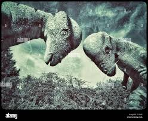
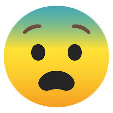

The Petroleum by meteorite. Painted in 66.000.000 a.c
El asombroso mundo de los dinosaurios esconde un sinfín de llamativas especies, adaptaciones biológicas y también el desarrollo de diferentes grupos según sus estrategias de alimentación. Uno de esos grupos más numerosos es sin duda el de los dinosaurios herbívoros del Jurásico, los cuales devoraban toda clase de hojas y plantas que existieron durante toda la era del Mesozoico. Gracias a los numerosos y diversos estudios de restos de dinosaurios que la paleontología ha ido realizando a lo largo de la historia, hoy en día podemos conocer con detalle muchos de los nombres de especies y características de los dinosaurios herbívoros.
En este interesante artículo de EcologíaVerde descubrirás toda la información que necesitas para conocer más de cerca el sorprendente mundo de los dinosaurios herbívoros: nombres, tipos, características e imágenes.
The Petroleum by meteorite. Painted in 66.000.000 a.c
Los dinosaurios herbívoros necesitaban contar con una determinada estructura anatómica que les permitiera defenderse de sus temibles depredadores carnívoros. En la siguiente lista veremos muchas de las principales características de los dinosaurios herbívoros:
| Especie | Perfil |
|---|---|
| Tyrannosaurus rex | El tiranosaurio rex, posiblemente el dinosaurio más nombrado, es una especie perteneciente al grupo de los saurisquios que habitó en América del Norte. Se trataba de una especie carnívora, de gran tamaño que superaba los 10 metros de longitud y pesaba más de 5 toneladas. |
| Triceratops spp | El género Triceratops, perteneciente al grupo de los ornitisquios, se compone de dos especies: T. horridus y T. prorsus. Ambas especies eran herbívoras y se distinguían por su gran cabeza con cuernos que era proporcionalmente mayor que la del resto de los animales terrestre. Los fósiles de estas especies se han encontrado en Canadá y Estados Unidos. |
| Velociraptor mongoliensis | En la historia de los dinosaurios, el velociraptor fue el más veloz de todos los dinosaurios, pudiendo correr a una velocidad de 65 kilómetros por hora gracias a su poderosas patas traseras. Esta cualidad lo convirtió en un gran cazador ya que era carnívoro. Los fósiles de esta especie se han hallado en Asia Central. |
| Archaeopteryx spp | El arqueópterix es un género de dinosaurios que se considera la transición evolutiva entre los dinosaurios y las aves modernas. Presentaba características propias de los dinosaurios como mandíbulas con fuertes dientes y una cola huesuda, pero también particularidades de las aves como pequeño tamaño corporal y grandes alas que le permitían desplazarse ciertas distancias. Sus fósiles han sido encontrados en América del Norte. |
| Patagotitan mayorum | Aunque no es una de las especies más conocidas, el Patagotitan mayorum es el dinosaurio más grande que se ha encontrado hasta el momento. Se estima que media aproximadamente 40 metros de longitud y podía alcanzar un peso de 70 toneladas. Fue descubierto en la provincia de Chubut, en la Patagonia argentina. |
Currie, P. J., & Padian, K. (Eds.). (1997). Encyclopedia of dinosaurs. Elsevier.
Norell, M. A. (2019). Patagotitan mayorum. The World of Dinosaurs: An Illustrated Tour, Chicago: University of Chicago Press, pp. 156-159.
Sistema APB garantizada .
NO ENTRAR
{kind=link}